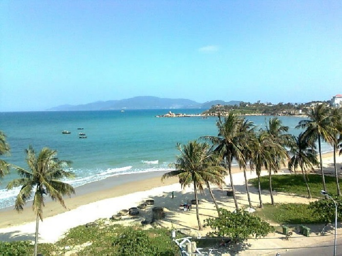
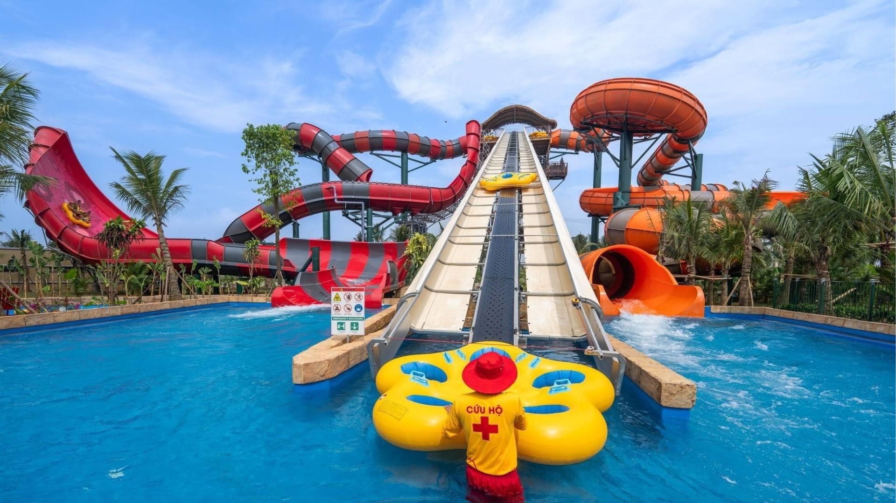
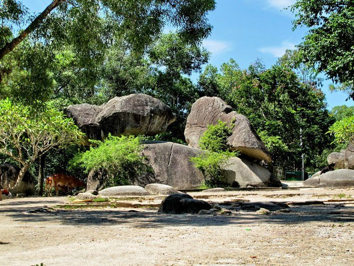
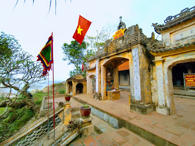
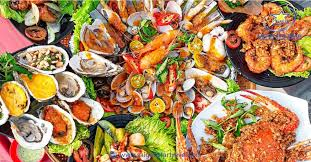
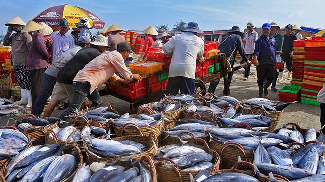
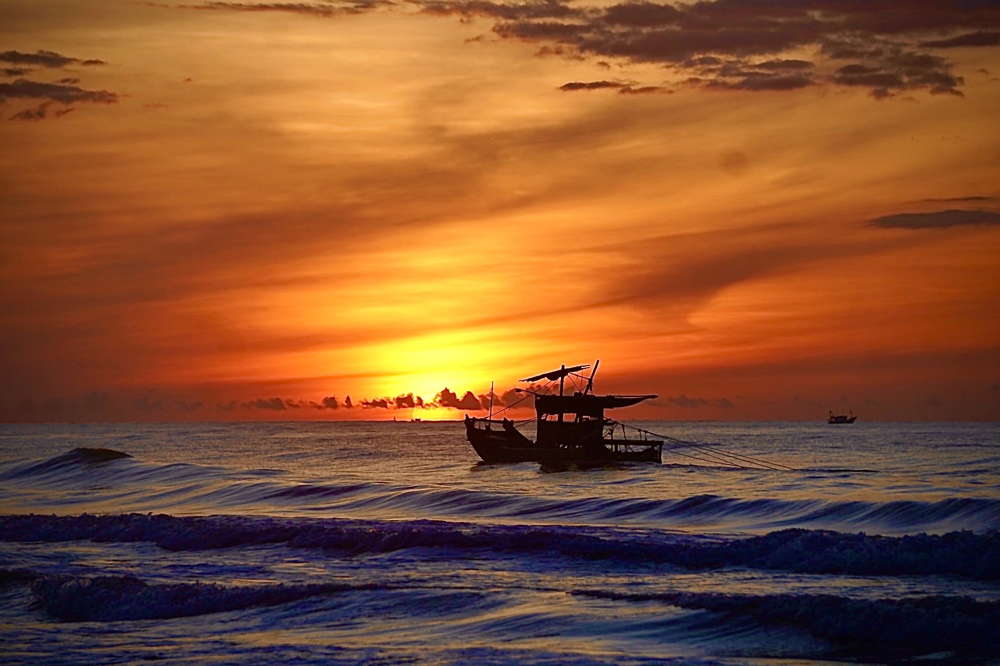
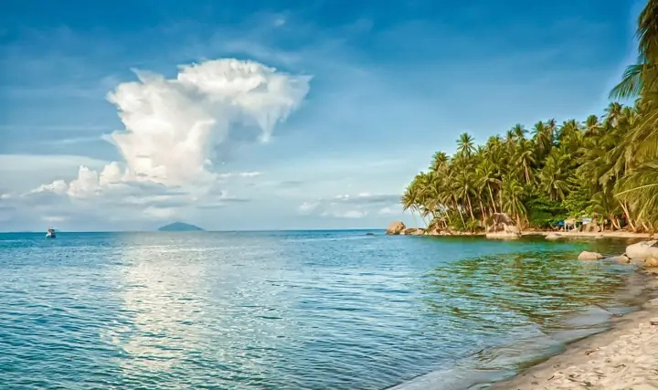

Giới Thiệu Tour
Sầm Sơn là một trong những bãi biển nổi tiếng nhất miền Trung, thu hút du khách bởi bờ cát dài, sóng biển mạnh, không khí nhộn nhịp và nhiều hoạt động vui chơi ven biển.
Tour Sầm Sơn Biển Xanh 2 ngày 1 đêm đưa du khách nghỉ dưỡng, tắm biển, thưởng thức hải sản, tham quan Hòn Trống Mái, Đền Độc Cước và tận hưởng không khí sôi động của thành phố biển Thanh Hóa.
Điểm Nổi Bật

Bãi Biển Sầm Sơn
Tận hưởng bãi biển rộng, sóng lớn và không khí mát lành.

Tắm Biển Và Vui Chơi
Tham gia các hoạt động vui chơi, tắm biển và thư giãn bên bờ cát.

Hòn Trống Mái
Check-in biểu tượng nổi tiếng gắn liền với truyền thuyết tình yêu.

Đền Độc Cước
Tham quan điểm tâm linh nằm trên núi Trường Lệ hướng ra biển.

Hải Sản Tươi Ngon
Thưởng thức mực, tôm, cua, ghẹ và các món đặc sản biển Thanh Hóa.

Chợ Hải Sản
Khám phá khu chợ ven biển với nhiều món quà đặc sản địa phương.

Bình Minh Trên Biển
Ngắm mặt trời lên trên mặt biển, chụp những khoảnh khắc trong lành.

Góc Check-in Biển
Nhiều góc chụp đẹp với biển xanh, cát vàng và hàng dừa ven bờ.
Lịch Trình Chi Tiết
Ngày 1 — Khởi Hành Đến Sầm Sơn
06:30 — Khởi hành từ Hà Nội hoặc điểm hẹn đã đăng ký.
10:30 — Đến Sầm Sơn, nhận phòng khách sạn và nghỉ ngơi.
11:30 — Dùng bữa trưa với các món hải sản địa phương.
15:00 — Tự do tắm biển, vui chơi và chụp ảnh trên bãi biển.
18:30 — Ăn tối tại nhà hàng ven biển.
20:00 — Tự do dạo biển, khám phá không khí Sầm Sơn về đêm.
Ngày 2 — Tham Quan Và Tạm Biệt Sầm Sơn
05:30 — Ngắm bình minh, đi dạo và chụp ảnh trên bãi biển.
07:00 — Ăn sáng tại khách sạn.
08:30 — Tham quan Hòn Trống Mái và Đền Độc Cước.
10:30 — Mua đặc sản, hải sản khô hoặc quà lưu niệm.
11:30 — Ăn trưa, trả phòng khách sạn.
13:00 — Khởi hành về lại điểm đón ban đầu.
17:30 — Kết thúc tour, hẹn gặp lại quý khách.
Bảng Giá Tour
| Đối Tượng | Giá / Người | Ghi Chú |
|---|---|---|
| Người lớn | 2.200.000 ₫ | Bao gồm xe đưa đón, khách sạn, bữa ăn và tham quan theo lịch trình. |
| Trẻ em 5–11 tuổi | 1.600.000 ₫ | Có ghế ngồi riêng, ngủ chung phòng với người lớn. |
| Trẻ em dưới 5 tuổi | Miễn phí | Ngồi cùng người lớn, chưa bao gồm chi phí phát sinh riêng. |
| Phụ thu phòng đơn | +400.000 ₫ | Áp dụng khi khách muốn ở một mình một phòng. |
Giá đã gồm: xe du lịch, khách sạn, bữa ăn, hướng dẫn viên, nước uống và bảo hiểm du lịch cơ bản.
Đánh Giá Khách Hàng
4.7 / 5 ★★★★★
118 đánh giá từ khách đã tham gia tour.
Trần Văn Phúc
Lịch trình vừa đủ, có thời gian tắm biển và tham quan. Hải sản tươi, hướng dẫn viên hỗ trợ nhiệt tình.
Lê Mai Anh
Bình minh ở Sầm Sơn rất đẹp. Tour hợp với nhóm bạn và gia đình đi nghỉ cuối tuần.
Nguyễn Thu Hà
Biển đông vui, đồ ăn ngon, khách sạn gần biển nên đi lại rất tiện. Gia đình mình có chuyến đi khá thoải mái.